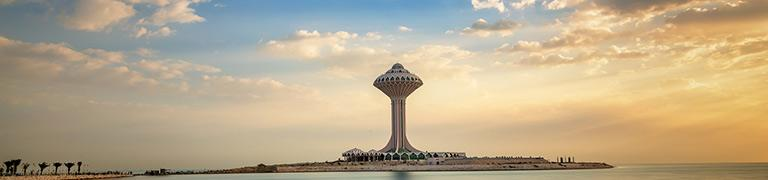

For more info you can visit Dammam wiki page!
Dammam City: Dammam City is an important Saudi port on the Arab Gulf east of Saudi Arabia. The largest town in the eastern region, it has expanded to the city limits of two other modern towns, Al-Khobar and Dhahran. Near Dammam are located the most important centers in the world for the production and refining of petroleum. The population of Dammam is greater than a million.
For more info you can visit Dammam wiki page!